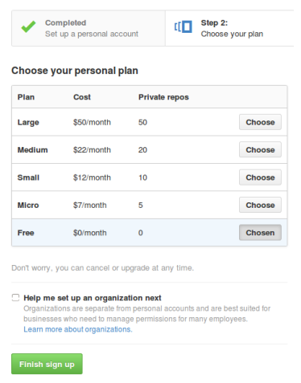
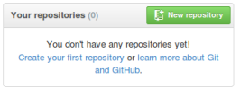
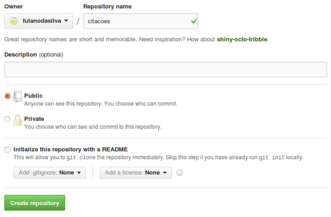
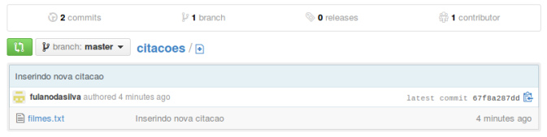
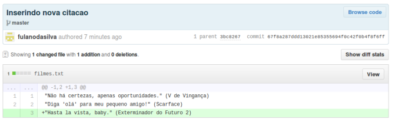

Compartilhando seu código através do GitHub
Para que o mundo possa descobrir nosso incrível projeto, temos que
compartilhá-lo na internet.
Para isso, utilizaremos uma aplicação web chamada GitHub
Criando uma conta no GitHub
O primeiro passo é criar uma conta no GitHub. Para projetos de código
aberto, não há custo nenhum! Com um navegador, acesse: https://github.com/
Preencha seu nome, e-mail e escolha uma senha.
Então, selecione o plano apropriado e finalize o cadastro, clicando em Finish Signup.
Se necessário, verifque o e-mail.
Criando um repositório no GitHub
Agora podemos criar um repositório remoto, que ficará disponível para todos da internet. Para isso, clique no botão New Repository após acessar: https://github.com/
No Repository name, devemos preencher o nome do repositório remoto. No nosso caso, vamos preencher com “citacoes”. Deixe o repositório como Public, para que qualquer pessoa consiga ver o seu código. As demais opções podem ficar com os valores padrão. Finalmente, devemos clicar em Create repository.
Pronto, já foi criado um repositório vazio lá no GitHub.
Apontando seu projeto para o GitHub
Devemos agora apontar o repositório da nossa máquina para o repositório do GitHub.
Em um terminal, certifque-se de estar no diretório citacoes, que tem o repositório local:
$ cd ~/citacoes
Então, execute o comando git remote, conforme o que segue:
$ git remote add origin https://github.com/fulanodasilva/ citacoes.git
Não deixe de alterar fulanodasilva para o seu usuário do GitHub. Não deve aparecer nenhuma mensagem.
Com o comando anterior, apontamos o nome origin para o repositório lá do GitHub.
Enviando as alterações para o GitHub
Com o repositório remoto configurado, podemos enviar nossas mudanças para o GitHub e, por consequência, para todo o mundo.
Para isso, basta executar o comando git push, da seguinte forma:
$ git push origin master
Com o comando anterior, enviamos as alterações para o repositório remoto confgurado com o nome origin. Forneça seu usuário e senha do GitHub quando solicitado. Deverá aparecer algo semelhante à seguinte saída:
Username for ’https://github.com’: fulanodasilva
Password for ’https://fulanodasilva@github.com’:
Counting objects: 6, done.
Delta compression using up to 4 threads.
Compressing objects: 100% (4/4),
Writing objects: 100% (6/6), 609 bytes | 0 bytes/s, done.
Total 6 (delta 1), reused 0 (delta 0)
To https://github.com/fulanodasilva/citacoes.git
* [new branch] master -> master
Vá até a página do seu projeto no GitHub: https://github.com/fulanodasilva/citacoes

Observe que o arquivo que você enviou já está disponível para qualquer
pessoa da internet. Avise seu primo, sua vizinha, todo mundo!
É possível ver todas as alterações no projeto até agora (no caso, foram duas), através do endereço: https://github.com/fulanodasilva/citacoes/
commits/master
Se clicarmos na última alteração, por exemplo, é possível ver as mudanças que foram feitas. Fascinante, não?
